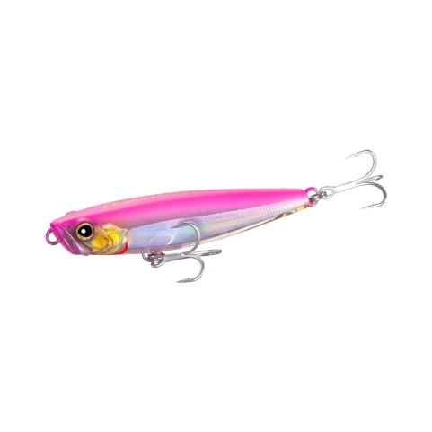

オセロスペンシル130F
（Ocellus Pencil 130F）
オセロスペンシル130FはSHIMANO（シマノ）のペンシルベイトです。
「オセロス」はラテン語で、多くのプレデターが尾びれに持つ「偽目」のこと。「スライド」と「ダイブ」という相反する要素を両立し、グローバルモデルとして求められる強度と飛距離も兼ね備えたバーサタイルでヘビーデューティーなペンシルです。130mmは強度4Xのフックを搭載しています。

画像出典:SHIMANO公式HP
スペック
- メーカー
- SHIMANO（シマノ）
- タイプ
- ペンシルベイト（フローティング）
- 全長
- 130mm
- 自重
- ラトル27g／フラッシュブースト26g
- フック
- （強度4X）#4×3
- 種類
- ラトル（ZR-U13Z）／フラッシュブースト（ZR-T13Z）
- ターゲット
- シーバス・青物など
- 価格
- ラトル2,200円／フラッシュブースト2,300円（税別）
▼今すぐチェック

オセロスペンシル130Fの特徴
5つのアクションと高強度を両立した、ヘビーデューティーなペンシル
-
多彩な動きの5アクション
アングラーの操作しだいで、ドッグウォーク・テーブルターン・ショートダイブ・ダイブ＆サブサーフェスアクション・パニックアクションの5つの動きを出せます。スライド系とダイブ系、本来は相反する要素を両立したペンシルです。
-
グローバルスタンダードの高強度
貫通ワイヤーを採用し、ラインアイとフックアイの引張強度は同社同クラス比72％アップ。浮力とアクションを保ったまま、ボディの肉厚も18％アップしています。
-
十分な飛距離と高いキャスト精度
コンパクトでヘビーウエイト、後方重心のバランスで、風の影響を受けにくく飛行姿勢が安定。よく飛ぶぶん、ピンポイントへのキャスト精度も上がります。
-
自由度の高い大口径アイ
スナップとの接点の自由度が高く、アクションのメリハリをつけやすい設計。溶接リング＋スプリットリングでの接続もしやすく、大物を想定したタックルにも対応します。
オセロスペンシル130Fの使い方
ドッグウォークで広く探り、魚のチェイスがあればダイブ＆サブサーフェスアクションやパニックアクションで捕食スイッチを入れる、間を取ったテーブルターンで焦らして食わせる、という流れが基本です。
1キャストの中で動きを切り替えられるので、着水点を一つ目の誘いと考えて、そこからアクションを組み立てていきましょう。
オセロスペンシル130Fの得意な状況
ベイトが大きいときや、大型のシーバス・青物など力の強い魚を水面で狙うとき。強度4Xのフックと貫通ワイヤーで、歯の鋭い魚やハードなストラクチャー周りも攻められます。
ワンポイント
130Fはサイズと重さがあるぶん、水を押す力も大きくなります。ダイブ＆サブサーフェスアクションで水面直下に潜らせ、浮き上がる瞬間に食わせる「間」を意識すると、パニックアクションとの組み合わせでメリハリのある誘いができます。
オセロスペンシルの使い分け
| モデル | 全長／自重 | 得意な場面 |
|---|---|---|
| オセロスペンシル85F | 85mm／11g | ラトル・フラッシュブーストとも11g。一口サイズで、ベイトタックルでも飛ばせる |
| オセロスペンシル130F | 130mm／27g（ラトル）・26g（フラッシュブースト） | 強度4Xのフックを搭載。大型の魚やパワーゲームに（本記事のモデル） |
どちらのサイズにも、音で誘う「ラトル」と、内部の反射板で止めても光る「フラッシュブースト」の2タイプがあります。ベイトのサイズや狙う魚の大きさでサイズを、水の色や時間帯でタイプを選び分けましょう。
人気カラー
公式サイトの製品写真から2色を紹介します（85F・130Fで共通のカラーです）。
 マットチャート（ラトル）
マットチャート（ラトル）
視認性の高いマットなチャート。濁りやマズメ時、アクションを目で追いたいときに。

クリアピンク（ラトル）クリアボディのピンク系。澄み潮で、シルエットを抑えながら目立たせたいときに。
画像出典:SHIMANO公式HP
オセロスペンシル130Fに似ているルアー
-
 オセロスペンシル85F
SHIMANO
詳細はこちら＞
オセロスペンシル85F
SHIMANO
詳細はこちら＞
同じオセロスペンシルの85mm・11g。ベイトが小さいときや、より小さい魚も狙いたいときに。
-
 ポップクイーンS105
マリア
詳細はこちら＞
ポップクイーンS105
マリア
詳細はこちら＞
全長105mm・自重30gのポッパー。同じくらいの重さで、ポッパーのスプラッシュで誘いたいときに。
-
 キリンジ90
Megabass
詳細はこちら＞
キリンジ90
Megabass
詳細はこちら＞
全長90mm・自重14.5gのウェイクベイト。ただ巻きの引き波で水面を攻めたいときに。